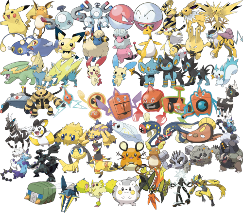

Electric-Type Pokemon
Electric-type Pokémon are a fascinating subset within the diverse world of Pokémon. Characterized by their electrical powers and often depicted with vibrant designs, they captivate trainers and fans alike with their unique abilities and appearances. From the iconic Pikachu to the formidable Zapdos, Electric-types offer a wide range of options for trainers seeking both strength and versatility in battle. One of the defining traits of Electric-type Pokémon is their mastery over electricity. This elemental power grants them a variety of offensive and defensive capabilities, making them formidable opponents in battles. With moves like Thunderbolt, Thunder Wave, and Thunder Punch, Electric-types can unleash devastating attacks on their foes, often paralyzing them or causing significant damage. Their proficiency in generating and manipulating electricity also allows them to excel in diverse environments, from urban cityscapes to thunderous storms. Beyond their combat prowess, Electric-type Pokémon play crucial roles in various aspects of the Pokémon world. Some, like Pikachu, have become iconic mascots of the franchise, beloved by fans worldwide. Their popularity extends beyond the realm of battles, with merchandise, television shows, and movies featuring these electrifying creatures. Additionally, Electric-types often serve practical purposes in the Pokémon universe, such as powering machines, lighting up dark areas, or providing energy for various tasks. Moreover, Electric-type Pokémon exhibit remarkable diversity in their designs and characteristics. While some, like the sleek and agile Jolteon, embody speed and agility, others, like the bulky and imposing Electivire, emphasize power and resilience. This variety ensures that trainers can find Electric-types to suit their preferred battling style and team composition. Additionally, Electric-types frequently possess secondary typings, further enhancing their versatility and strategic value in battles. Despite their strengths, Electric-type Pokémon also face vulnerabilities, primarily to Ground-type moves. This weakness requires trainers to adopt strategic approaches when facing opponents with Ground-type Pokémon, adding an element of challenge and depth to battles. However, with careful planning and effective team-building, trainers can mitigate these weaknesses and harness the full potential of their Electric-type companions. In conclusion, Electric-type Pokémon stand out as dynamic and compelling creatures within the Pokémon universe. With their mastery over electricity, diverse designs, and strategic importance in battles, they continue to captivate trainers and fans alike. Whether serving as beloved companions, formidable adversaries, or indispensable allies, Electric-types electrify the Pokémon world with their spark of excitement and energy.
